2025年北京市延庆区中考地理试卷 原卷解析
2025年北京市延庆区中考地理试卷
参考答案与试题解析
一、单项选择题（25小题，每题1分，共25分。请将答案填写到答题纸上）
小延同学用乒乓球和铁丝制作简易地球仪，如图是他制作过程。读图，完成1～2题。
1．在乒乓球上画的纬线中，最长的是（ ）
A．赤道B．回归线
C．极圈D．本初子午线
【答案】A
【分析】在乒乓球上画的纬线中，最长的是赤道。
【解答】解：根据所学知识可知，赤道是南北半球的分界线，也是最长的纬线。因此在乒乓球上画的纬线中，最长的是赤道。
故选：A。
2．步骤③中，把乒乓球用倾斜的铁丝穿起来，倾斜的铁丝两头，即a处和b处，用胶布裹几圈固定。对铁丝ab的说法，正确的是（ ）
A．a点是地球上的最南点
B．铁丝ab表示的是地轴
C．b点是地球上的最北点
D．地球上实际存在ab表示的轴
【答案】B
【分析】图中a点是地球上的最北点，b点是地球上的最南点，地轴是一个假想轴，并不存在；铁丝ab表示的是地轴。
【解答】解：铁丝ab为地轴，与地球表面相交的两点为北极和南极，a点是地球上的最北点，b点是地球上的最南点，地轴是一个假想轴，并不存在。
故选：B。
2025年4月30日13时08分，神舟十九号返回舱于东风着陆场东区的戈壁滩稳稳触地。此次返回标志着中国空间站应用与发展阶段第二次载人飞行任务取得圆满成功。图1为东风着陆场位置示意图和图2为地球公转示意图。读图，完成3～4题。
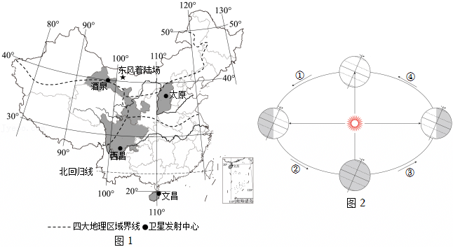
3．神舟十九号着陆当日北京昼夜情况是（ ）
A．出现极昼B．昼夜等长C．昼短夜长D．昼长夜短
【答案】D
【分析】春分日（日期是3月21日前后）或秋分日（日期是9月23日前后），太阳直射赤道，全球昼夜平分；夏至日（日期是6月22日前后），太阳直射北回归线，北半球昼长夜短；冬至日（日期是12月22日前后），太阳直射南回归线，北半球昼短夜长。
【解答】解：神舟十九号着陆当日为4月30日，地球公转至春分日和夏至日之间，北京的昼夜情况是昼长夜短。
故选：D。
4．返回地东风着陆场位于（ ）
A．南半球B．低纬度C．北温带D．西经度
【答案】C
【分析】在经纬网上，利用经纬网可以确定地球表面任何一个地点的位置。可依据经纬度的变化规律，确定东西经度、南北纬度。南北半球的划分是以0°纬线即赤道为界，赤道以北为北半球，以南为南半球。纬度区的划分，0°～30°为低纬度地区，30°～60°为中纬度地区，60°～90°为高纬度地区。热带的纬度范围是23.5°N～23.5°S，北温带的纬度范围是23.5°N～66.5°N，北寒带的纬度范围是66.5°N～90°N，南温带的纬度范围是23.5°S～66.5°S，南寒带的纬度范围是66.5°S～90°S。
【解答】解：在经纬网上，若相邻两条经线的经度向东增大，就是东经，用符号“E”表示，若相邻两条经线的经度向西增大，就是西经，用符号“W”表示；若相邻两条纬线的纬度向北增大，就是北纬，用符号“N”表示，若相邻两条纬线的纬度向南增大，就是南纬，用符号“S”表示。读图可知，东风着陆场的经纬度约为40°N，100°E。可判定，东风着陆场位于北半球、中纬度、北温带。
故选：C。
国家文化公园建设工作领导小组印发《长城国家文化公园建设保护规划》。预计2035年，北京长城国家文化公园将全面建成。如图为明长城分布示意图。读图，完成5～7题。
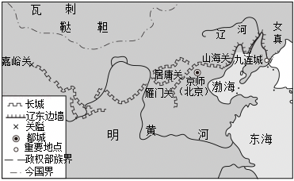
5．我国规划建设长城国家文化公园，这有助于（ ）
①恢复长城的军事防御功能
②维护长城沿线地区生态环境
③保护长城沿线的文化遗址
④了解我国多民族交融的历史
A．①②③B．①②④C．①③④D．②③④
【答案】D
【分析】长城国家文化公园是按照中央全面深化改革委员会会议审议通过的建设方案建设的国家级景观。长城国家文化公园建设整合长城沿线15个省区市文物和文化资源，按照“核心点段支撑、线性廊道牵引、区域连片整合、形象整体展示”的原则构建总体空间格局，着力将长城国家文化公园打造为弘扬民族精神、传承中华文明的重要标志。
【解答】解：我国规划建设长城国家文化公园，有助于维护长城沿线地区生态环境，保护长城沿线的文化遗址和了解我国多民族交融的历史，与恢复长城的军事防御功能无关，故②③④正确。
故选：D。
6．长城从古代军事工程转变为现代热门旅游景点，主要因为其具有（ ）
A．历史文化价值B．便利的交通条件
C．军事防御功能D．丰富的自然资源
【答案】A
【分析】长城从古代军事工程转变为现代热门旅游景点，主要因为其具有历史文化价值。
【解答】解：长城是我国古代重要的军事防御工程，承载着丰富的历史文化内涵，从古代军事工程转变为现代热门旅游景点，主要是因为其具有历史文化价值。现代长城的军事防御功能已不再重要；便利的交通条件是旅游发展的一个因素，但不是长城成为热门旅游景点的主要原因；长城本身并不具备丰富的自然资源。
故选：A。
7．延庆区某学校去八达岭长城进行社会实践合理的交通方式为（ ）
A．管道运输B．公路运输C．航空运输D．水路运输
【答案】B
【分析】各种运输方式的特点是：公路运输机动灵活、可以从门口到门口，适合短距离运输；航空运输速度快，适合急需情况的长途运输；铁路运输速度较快、运量较大，适合运量较大的长途运输；水上运输运量大，价格低，适合较大运量的长途运输；管道运输在地下，一般适合长距离输送石油、天然气，具有运输量大，连续性强，损耗少等优点。
【解答】解：公路运输机动灵活、可以从门口到门口，适合短距离运输。延庆区某学校去八达岭长城社会实践的交通方式为公路运输。
故选：B。
全国“两会”每年3月在北京召开。如图为北京市地形图。读图，完成8～9题。
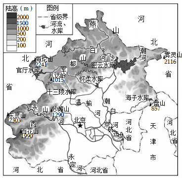
8．下列有关北京市的正确描述是（ ）
A．与河北省、天津市和山东省相邻
B．山河相间分布
C．受地势影响，河流自西北流向东南
D．属于亚热带季风气候
【答案】C
【分析】北京位于华北平原的西北角，是我国的首都，是全国的政治中心、文化中心、国际交往中心和科技创新中心，也是世界著名的历史文化名城。
【解答】解：北京市与河北省、天津市相邻。北京市西部、北部为山地和丘陵，分别属于太行山脉和燕山山脉，东南部为平原，属于华北平原的一部分，因此地势西北高、东南低。受地势影响，河流自西北流向东南。北京是温带季风气候，夏季高温多雨，冬季寒冷干燥。
故选：C。
9．全国“两会”在北京市召开，反映的北京市城市职能是（ ）
A．政治中心B．国际交往中心
C．文化中心D．科技创新中心
【答案】A
【分析】北京位于华北平原的西北角，是我国的首都，是全国的政治中心、文化中心、国际交往中心和科技创新中心，也是世界著名的历史文化名城。
【解答】解：北京是中华人民共和国的首都，是全国的政治中心、文化中心、国际交往中心。题目材料反映了北京是我国的政治中心。
故选：A。
如图为某同学手绘家族人口示意图。读图，完成10～11题。
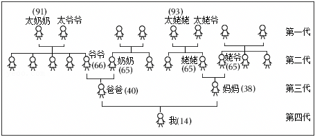
10．读图可知（ ）
A．家庭养老无负担B．第二代人口数量少
C．劳动人口比重高D．第三代是独生子女
【答案】D
【分析】随着经济的发展和人们生活水平的提高，人均寿命得到延长，因为实行计划生育，我国人口快速增长的局面得到一定程度的缓和，目前我国的人口增长实现“三低”，即出生率低、死亡率低、自然增长率低。但是人口问题也非常突出，主要有：因为人口基数大，每年新增人口多；性别比例失调；老龄化现象严重。
【解答】解：由图可得，第一代和第二代都是老年人，而且人数比较多，说明家庭养老负担重；第二代人口数量多；第三代是独生子女，劳动人口比重小。
故选：D。
11．如果运用该示意图探究人口素质变化，建议在图中添加的注记是（ ）
A．文化程度B．性别C．居住地D．出生地
【答案】A
【分析】理解我国目前进入老龄化社会，社会养老负担加重。如果要探究人口素质变化，应添加文化程度的注记。
【解答】解：如果运用该示意图探究人口素质变化，应该添加的注记是文化程度。探究男女比例变化，添加性别注记；探究住址的变化，添加居住地注记；探究出生地的变化，添加出生地注记。故A正确，符合题意。
故选：A。
某校兴趣小组的同学，尝试用地理视角解读《海底两万里》。图1为“鹦鹉螺号”航行路线图，图2为六大板块分布示意图。读图，完成第12～13题。
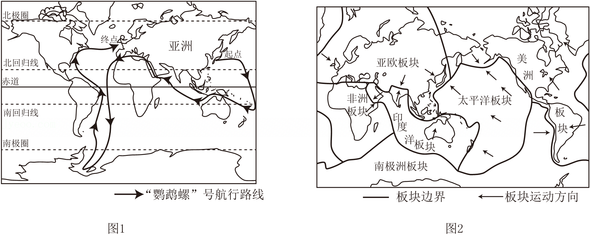
12．“鹦鹉螺”号航行证明地球表面海陆分布的特点是（ ）
A．有连续而广阔的陆地
B．有连续而广阔的海洋
C．陆地相连但海洋不相连
D．海洋主要分布在北半球
【答案】B
【分析】根据人们的计算，地球表面71%是海洋，29%是陆地。概括地说，地球上七分是海洋，三分是陆地。海洋主要分布在南半球和西半球，陆地主要分布在北半球和东半球。全世界共有七大洲，按面积由大到小排列分别为：亚洲、非洲、北美洲、南美洲、南极洲、欧洲和大洋洲；地球上广阔的海洋连为一体，习惯上人们把大洋分为四大部分，分别命名为太平洋、大西洋、印度洋和北冰洋。
【解答】解：“鹦鹉螺”号航行证明地球表面有连续而广阔的海洋，B正确；陆地被海洋隔开，不是连续的，AC错误；海洋主要分布在南半球和西半球，D错误。
故选：B。
13．航行途中，在地中海海域看到了海底火山喷发，该火山位于（ ）
A．位于印度洋板块和太平洋板块交界处
B．位于南极洲板块和印度洋板块交界处
C．位于亚欧板块和非洲板块交界处
D．位于亚欧板块和太平洋板块交界处
【答案】C
【分析】板块运动学说认为，由岩石组成的地球表面并不是一块整体，而是由板块拼合而成的。全球大致划分为亚欧板块、太平洋板块、非洲板块、美洲板块、印度洋板块和南极洲板块六大板块，各大板块处于不停的运动中。一般来说，板块内部地壳比较稳定；板块与板块的交界地带，有的张裂拉伸，有的碰撞挤压，地壳比较活跃，多火山地震，形成环太平洋火山地震带和地中海﹣喜马拉雅火山地震带。
【解答】解：航行途中，在地中海海域看到了海底火山喷发，读图2可知，该火山位于亚欧板块和非洲板块的交界处，地壳活跃，火山频发。
故选：C。
如图为北半球年平均气温分布和南半球降水量分布示意图。读图，完成14～15题。
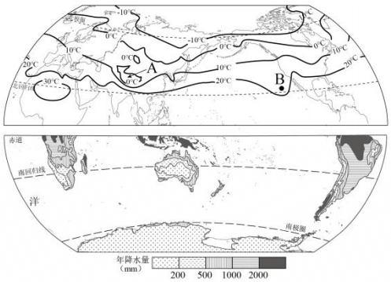
14．气候的两大要素是气温和降水，关于世界气温和降水分布规律的叙述正确的是（ ）
A．世界气温从低纬度向高纬度逐渐降低
B．赤道地区降水少，两极地区降水多
C．同纬度范围内，陆地和海洋的气温均相同
D．回归线附近大陆东岸降水少，大陆西岸多
【答案】A
【分析】世界上气温分布的规律是从赤道向南北两极逐渐降低，世界上平均气温最高的地方位于非洲的北部，世界上平均气温最低的地方是南极洲。影响气温高低的因素有纬度因素、海陆因素、地形因素等。一年中，北半球大陆月平均气温最高值出现在7月，海洋上是8月，南半球大陆月平均气温最高值出现在1月，海洋上是2月。世界降水的分布规律为：赤道附近降水多，两极地区降水少；回归线附近，大陆内部和西岸降水少，东岸降水多；中纬度，大陆内部降水少，沿海地区降水多；山地迎风坡降水多，背风坡降水少。
【解答】解：世界气温从低纬度向高纬度逐渐降低；赤道地区降水多，两极地区降水少；同纬度范围内，陆地和海洋的气温不同；回归线附近大陆东岸降水多，大陆西岸降水少。
故选：A。
15．纬度相近的A地和B地的年平均气温不同，产生差异的原因（ ）
A．纬度位置B．海陆位置C．地形D．人为原因
【答案】C
【分析】影响气候的因素有纬度因素、地形因素和海陆位置等。
【解答】解：读图可得，纬度相近的A地和B地的年平均气温不同，产生差异的原因地形因素，A地位于青藏高原地区，该地海拔高，气温低。
故选：C。
如图为甲大洲河流分布图。读图，完成16～18题。
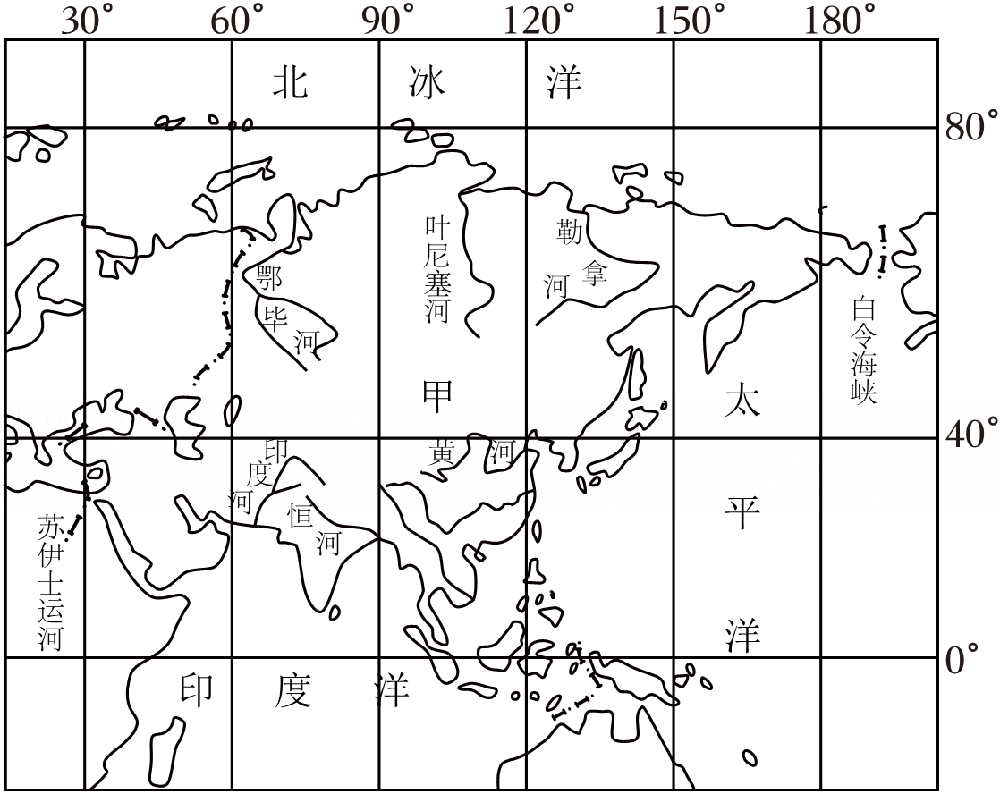
16．据图判断，甲大洲最东端的经度约为（ ）
A．170°EB．170°WC．81°ND．11°S
【答案】B
【分析】亚洲是世界上面积最大的大洲，最东端的经度约为170°W。
【解答】解：根据所学知识及读图分析可知，图中甲为亚洲，该大洲的纬度范围是10°S﹣80°N，经度范围是25°E﹣170°W。因此甲大洲最东端的经度约为170°W。
故选：B。
17．关于甲大洲地理位置的叙述，正确的是（ ）
A．位于南半球和东半球
B．西北隔白令海峡与北美洲相望
C．东北与欧洲相邻
D．西南与非洲以苏伊士运河为界
【答案】D
【分析】根据所学知识及读图分析可知，甲大洲为亚洲。大部分位于北半球、东半球；东北隔白令海峡与北美洲相望；西面与欧洲相邻；西南与非洲以苏伊士运河为界。
【解答】解：A、根据所学知识及读图分析可知，甲大洲为亚洲，该大洲大部分位于北半球、东半球，不符合题意。
B、亚洲东北隔白令海峡与北美洲相望，不符合题意。
C、亚洲西面与欧洲相邻，不符合题意。
D、亚洲西南与非洲以苏伊士运河为界，符合题意。
故选：D。
18．读图可知甲大洲河流的流向为（ ）
A．从四周呈同心状流向中部
B．从中部呈放射状流向四周
C．从南向北流
D．从西向东流
【答案】B
【分析】图中的甲为亚洲。亚洲的河流呈放射状流向周边的海洋。
【解答】解：根据所学知识及读图分析可知，图中甲大洲为亚洲。亚洲的河流多发源于中部的高原、山地，受地势的影响，呈放射状流向周边的海洋。
故选：B。
中老铁路是中国与老挝的区域互联互通合作项目。如图为中老铁路线图，读图，完成19～20题。
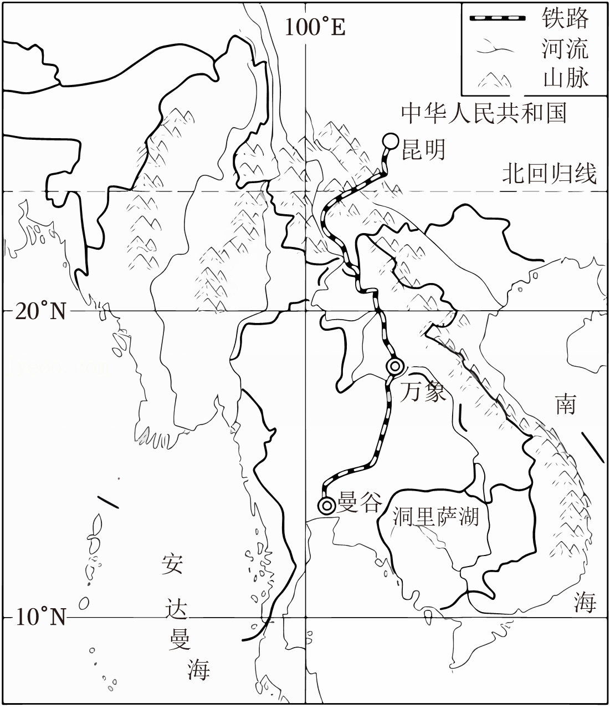
19．中南半岛地形特征（ ）
A．平原面积最广B．地形起伏小
C．山河相间分布D．南高北低
【答案】C
【分析】东南亚中南半岛上山脉、河流多由北向南延伸，形成了山河相间、纵列分布的特点，自西向东有伊洛瓦底江、萨尔温江、湄南河、湄公河和红河，河流自北向南流，流入印度洋和太平洋。
【解答】解：东南亚中南半岛上山脉、河流多由北向南延伸，形成了山河相间、纵列分布的特点，地势北高南低，地形多山地和平原，地面起伏较大。
故选：C。
20．中老铁路的修建者说：“这条铁路不是铺出来的，而是挖出来的、架出来的。”修建该铁路需要克服的困难有（ ）
①流动沙丘
②地形崎岖
③河流众多
④高寒缺氧
A．①②B．①③C．②④D．②③
【答案】D
【分析】东南亚中南半岛上山脉、河流多由北向南延伸，形成了山河相间、纵列分布的特点，自西向东有伊洛瓦底江、萨尔温江、湄南河、湄公河和红河，河流自北向南流，流入印度洋和太平洋；中南半岛属于热带季风气候。
【解答】解：中南半岛山河相间、纵列分布，中老铁路沿线地区河流众多，地形崎岖，因此铁路多架设桥梁，多穿过隧道，故有“中老泰铁路不是铺出来的，而是挖出来的、架出来的”的说法，②③符合题意。
故选：D。
阿拉伯联合酋长国（简称阿联酋）油气资源十分丰富，但政府高度重视清洁能源，目前已建成全球装机容量最大的太阳能光伏电站。图1为阿联酋位置示意图，图2为阿布扎比气温曲线降水量状图。读图，完成21～22题。
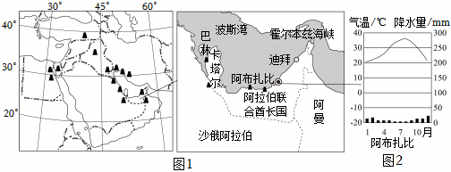
21．阿联酋利用光伏发电有利条件是（ ）
A．远离海洋，风速大B．降水稀少，光照强
C．纬度较低，气温高D．空气稀薄，吸热少
【答案】B
【分析】阿联酋利用光伏发电有利条件是降水稀少，光照强。
【解答】解：根据所学知识可知，阿联酋地处热带沙漠气候区，全年降水量极少，阳光充足，光照强度高，这为光伏发电提供了极其优越的自然条件。充足的阳光可以显著提高光伏发电的效率，因此这是阿联酋发展光伏发电的主要优势。
故选：B。
22．阿联酋高度重视光伏的原因是（ ）
①油气资源运输不便
②油气资源不可再生
③太阳能清洁无污染
④剩余油气资源不多
A．①②B．③④C．①④D．②③
【答案】D
【分析】阿联酋高度重视光伏的原因是油气资源不可再生；太阳能清洁无污染。
【解答】解：①油气资源运输方便，不符合题意。
②阿联酋虽然拥有丰富的油气资源，但这些资源是有限的，不可再生。因此，阿联酋需要通过发展可再生能源来减少对化石燃料的依赖，确保能源的可持续供应，符合题意。
③太阳能是一种清洁、可再生的能源，不会产生温室气体和其他污染物。阿联酋地处阳光充足的地区，太阳能资源丰富，发展光伏发电可以有效减少环境污染，符合题意。
④阿联酋油气资源储量大，不符合题意。
故选：D。
2024年2月7日，我国南极第五个科考站秦岭站开站。如图为我国南极科考站分布图。读图完成23～25题。
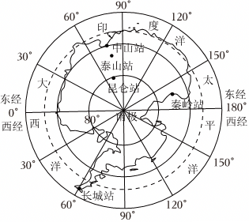
23．关于秦岭站说法正确的是（ ）
A．我国纬度最高考察站B．没有极昼和极夜现象
C．位于74°S，163°ED．所临的海洋为大西洋
【答案】C
【分析】我国在南极地区已经建成的科学考察站有长城站、中山站、昆仑站、泰山站和秦岭站，在北极地区的科学考察站有黄河站。南北半球季节相反，南极洲的暖季是每年的11月至次年的3月，该季节是去南极洲考察的最佳时间。
【解答】解：读图所知，秦岭站有极昼和极夜现象，位于74°S，163°E，所临的海洋为太平洋。我国纬度最高的考察站是昆仑站。
故选：C。
24．我国科考队员到南极考察面临的恶劣气候条件是（ ）
A．炎热干燥B．酷寒烈风C．台风海啸D．高温多雨
【答案】B
【分析】南极地区包括南极大陆及其沿海岛屿和陆缘冰，还包括南太平洋、南印度洋、南大西洋的一部分。南极大陆孤独地位于地球的最南端，南极大陆95%以上的面积为厚度极高的冰雪所覆盖，素有“冰雪高原”之称。它至今仍然没有常住居民。南极地区气候特点是酷寒、烈风和干燥。
【解答】解：南极地区纬度高，气温极低，气候特点是酷寒、烈风和干燥，所以科考队员在南极地区面临的恶劣气候条件是酷寒、烈风，B正确，ACD排除。
故选：B。
25．保护南极地区考察时正确的做法是（ ）
A．大量开采石油资源B．随意丢弃生活垃圾
C．保护环境爱护动物D．捕杀动物制作标本
【答案】C
【分析】南极洲上已发现的矿物就有220多种，煤矿资源最为丰富，此外还有丰富的铁矿，石油和天然气资源。代表性的动物是企鹅。
【解答】解：迄今为止，已有俄罗斯、美国、英国、阿根廷、澳大利亚、日本和中国等30多个国家在南极地区建立了一大批科学考察站，在南极地区进行科考工作。在北极地区考察时正确的做法是：保护环境爱护动物、不随意丢弃生活垃圾、不捕杀动物制作标本、不大量开采石油资源。
故选：C。
二、综合题（3道大题，共35分。请将答案填写到答题纸上）
26．（11分）民以食为天，重庆市以其独具特色的地方美食闻名于世，吸引众多国内外游客。如图为重庆自然环境特征相关资料。阅读资料，回答问题。
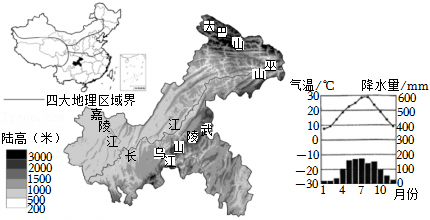
（1）重庆位于四大地理区域中 南方地区 ，重庆北部为 秦岭 和巫山，东为武陵山等山地，地势起伏 大 ，有“山城”之称。重庆传统主食为米饭，其来源的农业生产活动为 种植业 。
重庆人无辣不欢，是著名的火锅之城。此外，水煮鱼、万州烤鱼也备受游客喜爱。
（2）重庆属于亚热带季风气候，夏季 高温多雨 ，冬季温和少雨。重庆月平均气温超过20℃的月份达 5 个月，年降水量在 800 mm以上，再加上多山地，易形成大雾，湿气大。
（3）长江自 西 向 东 流过重庆，重庆境内河流众多，一方面，为种植业提供充足的 水源 ；另一方面，也是 渔业 （农业部门）发展的重要基础。
【答案】（1）南方地区；秦岭；大；种植业；
（2）高温多雨；5；800；
（3）西；东；水源；渔业。
【分析】重庆市位于中国西南部、长江上游地区，地跨东经105°11'～110°11'、北纬28°10'～32°13'之间，东邻湖北、湖南，南靠贵州，西接四川，北连陕西；辖区东西长470千米，南北宽450千米，幅员面积8.24万平方千米。
【解答】解：（1）重庆位于秦岭以南，属于我国四大地理区域中的南方地区，重庆北部为秦岭和巫山，地势起伏大；重庆的传统主食为米饭，其来源的农业生产活动为种植业。
（2）重庆属于亚热带季风气候，夏季高温多雨、冬季温和少雨，重庆月平均气温超过20℃的月份达5个月，年降水量在800mm以上，加上山地多，易形成大雾。
（3）长江自西向东流过重庆，重庆境内河流众多，一方面为种植业提供充足的水源，另一方面也是渔业发展的重要基础。
故答案为：（1）南方地区；秦岭；大；种植业；
（2）高温多雨；5；800；
（3）西；东；水源；渔业。
27．（12分）今年暑假，北京的小明一家计划去欧洲西部旅行，他们制定了初步计划，请你来帮忙进一步思考完善。如图为欧洲西部地形和气候图。阅读资料，回答问题。
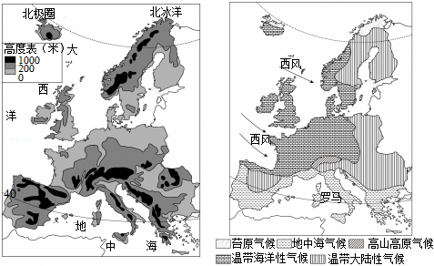
（1）小明读世界地图观察欧洲西部的位置，发现该地区与中国距离遥远，但同在 亚欧 大陆上，它们主要位于五带中的 北温带 ，而且都临海，欧洲西部西临世界第二大洋 大西洋 。
（2）旅行社提供了四个热点旅行项目，请你帮助小明同学选出其中适合暑期出游的两项是 BD （双项选择），从选出的两项中任选其一，从气候角度说明将其作为旅游项目的理由 地中海地区夏季降水少，多晴天，可以享受日光浴及海滩景观 。
A.冰岛—冰川追光之旅
B.地中海—艳阳海滩之旅
C.阿尔卑斯—雪岭极速之旅
D.多瑙河—泛舟舒缓之旅
（3）小明了解到欧洲西部是世界上 发达 （发达或发展中）国家分布最集中的地区，不仅工业发展水平高：受 温带海洋性 气候的影响，该地区 畜牧业 （农业部门）发达，牛羊肉和奶制品质量佳。各种工农产品得益于便利的 交通运输 条件，可以出口至世界各地。
2023年，欧洲西部接待国际游客7亿人次，占全球总数的54%，旅游业对欧盟经济贡献超2.1万亿美元，直接创造就业岗位2200万个。旅游业的繁荣刺激了对基础设施、酒店住宿业、餐饮业、零售业、娱乐设施以及通信网络的持续投资和升级换代。这种投资不仅服务于游客，也显著改善了当地居民的生活品质和商业环境。
（4）在旅行社，小明看到很多游客来咨询欧洲西部旅行项目，请结合资料说明欧洲西部发展旅游业对当地的有利影响。 增加当地的经济收入，带动当地服务业的发展等 （答出至少两点）。
【答案】（1）亚欧；北温带；大西洋；（2）BD；地中海地区夏季降水少，多晴天，可以享受日光浴及海滩景观；（3）发达；温带海洋性；畜牧业；交通运输；（4）增加当地的经济收入，带动当地服务业的发展等。
【分析】欧洲西部多发达国家，该地区主要位于北温带。欧洲西部的自然和人文旅游资源异常丰富。挪威陡峻幽深的峡湾、瑞士冰雪皑皑的山峰、西班牙阳光灿烂的海滩、法国景色如画的田园、风光旖旎；千年古都罗马、音乐之都维也纳、艺术之都巴黎，精湛典雅；古老的城堡、庄严的教堂、为数众多的博物馆，风格各异；西班牙的斗牛场、意大利的狂欢日以及慕尼黑的啤酒节。欧洲西部主要是温带海洋性气候，其特征是：冬无严寒，夏无酷暑，全年降水均匀，没有旱涝灾害，适合发展畜牧业。据题干中信息解答。
【解答】解：（1）欧洲西部地区与中国距离遥远，但同在亚欧大陆上，它们主要位于五带中的北温带，而且都临海，欧洲西部西临世界第二大洋即大西洋。
（2）去欧洲西部适合暑期出游项目有：地中海—艳阳海滩之旅；多瑙河—泛舟舒缓之旅，其中地中海地区夏季降水少，多晴天，可以享受日光浴及海滩景观。
（3）小明了解到欧洲西部是世界上发达国家分布最集中的地区，不仅工业发展水平高，受温带海洋性气候的影响，该地区畜牧业发达，牛羊肉和奶制品质量佳。各种工农产品得益于便利的交通运输条件，可以出口至世界各地。
（4）欧洲西部发展旅游业对当地的有利影响是：增加当地的经济收入，带动当地服务业的发展等。
故答案为：（1）亚欧；北温带；大西洋；（2）BD；地中海地区夏季降水少，多晴天，可以享受日光浴及海滩景观；（3）发达；温带海洋性；畜牧业；交通运输；（4）增加当地的经济收入，带动当地服务业的发展等。
28．（12分）如图1为澳大利亚示意图，图2为巴西示意图。读图文资料，完成下列问题。
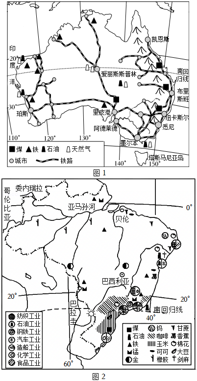
（1）巴西与澳大利亚都被 南回归线 （重要纬线）穿过，以热带气候为主， 巴西 国北部水资源丰富。澳大利亚和巴西同属于 南 半球（南半球/北半球）。
（2）巴西主要经济作物是 咖啡、橡胶等 ，粮食作物以 玉米 为主，主要分布在 东南 。
钢铁工业生产需要大量的铁矿石和煤炭，耗水量大，需要充足的劳动力。澳大利亚的铁矿品质优，但是本国钢铁工业规模小，是世界矿产品主要出口图之一。
（3）钢铁工业生产需要大量的铁矿石和煤炭，耗水量大，需要充足的劳动力，而澳大利亚是一个 发达 （发达/发展中）的国家，国内市场需求少，劳动力欠缺。澳大利亚中部、西部热带沙漠气候广布，气候 干旱 。澳大利亚的矿产资源 丰富 ，素有 “坐在矿车上的国家” 的称号，其中铁矿主要分布于 西 部，煤资源主要分布于 东 部。
【答案】（1）南回归线；巴西；南；
（2）咖啡、橡胶等；玉米；东南；
（3）发达；干旱；丰富；“坐在矿车上的国家”；西；东。
【分析】（1）从纬度位置看，巴西与澳大利亚均被南回归线穿过，主要以热带气候为主。赤道是南北半球的分界线，赤道以北为北半球，赤道以南为南半球。
（2）巴西大部分领土位于热带，气候湿热，地形平坦，具有种植热带作物的得天独厚的自然条件，主要的经济作物有咖啡、甘蔗等。粮食作物主要分布在东南。
（3）从经济发展水平看，澳大利亚属于发达国家。澳大利亚中部、西部热带沙漠气候广布，气候干旱。澳大利亚的矿产资源 丰富，素有“坐在矿车上的国家”的称号，其中铁矿主要分布于西部，煤资源主要分布于东部。
【解答】解：（1）巴西与澳大利亚均被南回归线穿过，主要以热带气候为主。巴西北部水资源丰富，而澳大利亚和巴西都位于南半球。
（2）巴西的主要经济作物包括咖啡和橡胶，粮食作物则以玉米为主，主要分布在东南部。钢铁工业需要大量的铁矿石和煤炭，耗水量大，且需要充足的劳动力。澳大利亚的铁矿品质优良，但本国钢铁工业规模较小，是世界主要的矿产品出口国之一。
（3）钢铁工业的生产需要大量的铁矿石和煤炭，耗水量大，且需要充足的劳动力。澳大利亚是一个发达国家，国内市场需求较少，劳动力相对欠缺。澳大利亚的中部和西部广泛分布着热带沙漠气候，气候干旱。澳大利亚的矿产资源丰富，素有“坐在矿车上的国家”之称，其中铁矿主要分布在西部，煤炭资源主要分布在东部。
故答案为：
（1）南回归线；巴西；南；
（2）咖啡、橡胶等；玉米；东南；
（3）发达；干旱；丰富；“坐在矿车上的国家”；西；东。